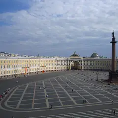
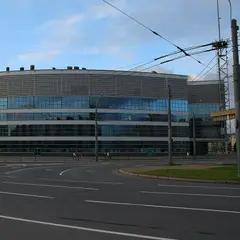
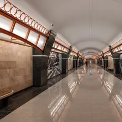
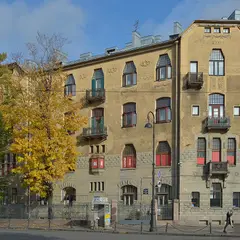
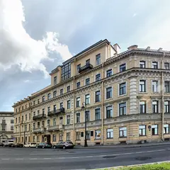

Подборку собрали 12 ноября, прошедшие события скрыты. Свежая афиша — на главной
Выходные 14–15 ноября
Чем заняться в выходные в Петербурге
На выходных, 14–15 ноября, в нашей афише 23 события, среди них 8 выставок, 7 спектаклей и 2 концерта. А если хочется просто выбраться из дома, у нас 65 планов на день: парк, усадьба или музей, а потом обед или кофе рядом.
- 23 события
- 65 планов
Афиша на 14–15 ноября 23
Музей «Эрарта» · м. Горный институт · 1 500–2 950 ₽
Итальянский фэшн-фотограф, четверть века работавший с Vogue Italia: портреты звёзд, моделей и дизайнеров эпохи большой моды. Легко и красиво смотреть с подругами.
Подробнее: Бардо Фабиани. Память о прекрасном прошломПозвать сюда: Бардо Фабиани. Память о прекрасном прошломБилеты : Бардо Фабиани. Память о прекрасном прошлом (страница с билетами, откроется в новой вкладке)
Фото: Erarta, CC BY 3.0 · Wikimedia Commons

Эрмитаж, Главный музейный комплекс · м. Адмиралтейская
Шёлковые придворные халаты, портреты цинских полководцев и воссозданный кабинет китайского учёного в Гербовом зале. Выставка работает до 22 ноября — успейте.
Подробнее: Императорский Китай. Династия Цин (1644–1911)Позвать сюда: Императорский Китай. Династия Цин (1644–1911)Билеты : Императорский Китай. Династия Цин (1644–1911) (страница с билетами, откроется в новой вкладке)
Фото: Teddy fox78, CC BY-SA 3.0 · Wikimedia Commons
Эрмитаж, Главный музейный комплекс · м. Адмиралтейская
Эскизы, по которым швейцарские мастера собирали цветные окна для ратуш и домов. Тонкая графика в небольшой галерее — приятная пауза после парадных залов.
Подробнее: Линии света. Швейцарские рисунки для витражей XVI–XVII вековПозвать сюда: Линии света. Швейцарские рисунки для витражей XVI–XVII вековБилеты : Линии света. Швейцарские рисунки для витражей XVI–XVII веков (страница с билетами, откроется в новой вкладке)
Фото: Teddy fox78, CC BY-SA 3.0 · Wikimedia Commons
РОСФОТО · м. Адмиралтейская · 0+
Нижний Новгород 1896-го на старинных снимках: павильоны большой Всероссийской выставки, электрическая дорога и воздухоплавательный парк. Тихий музей рядом с Исаакием.
Подробнее: Россия 1896. К юбилею Нижегородской промышленной и художественной выставкиПозвать сюда: Россия 1896. К юбилею Нижегородской промышленной и художественной выставкиБилеты : Россия 1896. К юбилею Нижегородской промышленной и художественной выставки (страница с билетами, откроется в новой вкладке)
Эрмитаж, Главный штаб · м. Адмиралтейская
Полузабытый художник, проживший жизнь между Россией и Францией: картины из частного фонда в залах Главного штаба. Удобно совместить с импрессионистами в том же здании.
Подробнее: Русский парижанин Константин КузнецовПозвать сюда: Русский парижанин Константин КузнецовБилеты : Русский парижанин Константин Кузнецов (страница с билетами, откроется в новой вкладке)
Фото: Max A. Khlopov, CC BY-SA 3.0 · Wikimedia Commons
Манеж · м. Адмиралтейская · 100–800 ₽ · 12+
Тысяча с лишним экспонатов из 98 собраний страны: шаляпинский наряд царя Бориса, кусок занавеса Боровского с таганковского «Гамлета» и головинский занавес «Маскарада».
Подробнее: Сцена действияПозвать сюда: Сцена действияБилеты : Сцена действия (страница с билетами, откроется в новой вкладке)
Фото: SERGiK73, CC BY-SA 3.0 · Wikimedia Commons
Музей «Эрарта» · м. Горный институт · 1 500–2 950 ₽
Кастомные «харлеи», архивные фото и истории владельцев: каждый байк тут — портрет хозяина. Отличный повод привести в музей тех, кто в музеи обычно не ходит.
Подробнее: Harley-Davidson. Дух свободыПозвать сюда: Harley-Davidson. Дух свободыБилеты : Harley-Davidson. Дух свободы (страница с билетами, откроется в новой вкладке)
Фото: Erarta, CC BY 3.0 · Wikimedia Commons
СК «Юбилейный» · м. Спортивная · 1 500–6 000 ₽ · 0+
Ледовый спектакль о Тамаре Москвиной — тренере, вырастившей целую плеяду чемпионов. Фигурное катание, музыка и история петербургской школы парного катания.
Подробнее: Москвина. Лёд и судьбаПозвать сюда: Москвина. Лёд и судьбаБилеты : Москвина. Лёд и судьба (страница с билетами, откроется в новой вкладке)
Фото: Николай Булыкин, CC BY-SA 4.0 · Wikimedia Commons
Замок на Невском · м. Маяковская · от 1 600 ₽ · 12+
Иммерсивное мистическое шоу: герои «Шинели», «Носа» и «Вия» в одном сюжете, а зритель может вмешаться в ход действия. По пятницам и субботам в 19:00, недорого.
Подробнее: Петербург ГоголяПозвать сюда: Петербург ГоголяБилеты : Петербург Гоголя (страница с билетами, откроется в новой вкладке)

Ледовый дворец · м. Проспект Большевиков · 3 700–32 000 ₽ · 12+
Четыре часа танцев под звёзд 90-х в Ледовом дворце: два десятка артистов, новая постановка и обещанный зарубежный гость. Берите удобную обувь и всю компанию.
Подробнее: Супердискотека 90-х «Это фантастика!»Позвать сюда: Супердискотека 90-х «Это фантастика!»Билеты : Супердискотека 90-х «Это фантастика!» (страница с билетами, откроется в новой вкладке)
Фото: A.Savin, CC BY-SA 3.0 · Wikimedia Commons
БКЗ «Октябрьский» · м. Площадь Восстания · 2 200–10 000 ₽ · 12+
Светлана Сурганова по традиции отмечает день рождения большим концертом в БКЗ: фолк, рок и шансон в одной программе. Тёплая публика и много знакомых песен.
Подробнее: Сурганова и ОркестрПозвать сюда: Сурганова и ОркестрБилеты : Сурганова и Оркестр (страница с билетами, откроется в новой вкладке)
Фото: Florstein, CC BY-SA 4.0 · Wikimedia Commons
Театр «На Литейном» · м. Маяковская · 800–2 500 ₽ · 16+
Барон по пьесе Горина: цирковые номера, полёт на Луну верхом на ядре и спор о праве быть собой. 29 октября на Малой сцене, 14 ноября — на Большой.
Подробнее: Тот самый МюнхгаузенПозвать сюда: Тот самый МюнхгаузенБилеты : Тот самый Мюнхгаузен (страница с билетами, откроется в новой вкладке)
Фото: Thomon, CC BY-SA 4.0 · Wikimedia Commons
Центр современного искусства им. Сергея Курёхина · м. Горный институт · 1 000–3 000 ₽ · 16+
Фестиваль новой этнической музыки вернулся после долгой паузы: «Толока», Hodíla ízba, POLE и электронный Bad Zu. Фольклор, джаз и танцевальные биты на двух сценах.
Подробнее: Этно-механикаПозвать сюда: Этно-механикаБилеты : Этно-механика (страница с билетами, откроется в новой вкладке)
Commode · м. Маяковская · 390–1 990 ₽ · 18+
У микрофона только девушки-комики из Петербурга и Москвы: про бывших, свидания и всё наболевшее. Идёт почти каждый вечер на Невском — готовый план для девичника.
Подробнее: Стендап по-женскиПозвать сюда: Стендап по-женскиБилеты : Стендап по-женски (страница с билетами, откроется в новой вкладке)
Отель «Москва» · м. Площадь Александра Невского · 1 290–2 990 ₽ · 18+
Сборный концерт: пять хедлайнеров с телешоу и интернет-проектов, один из них ведёт вечер. Зал в отеле у Александро-Невской лавры, поздний старт — формат для компании.
Подробнее: Главный стендапПозвать сюда: Главный стендапБилеты : Главный стендап (страница с билетами, откроется в новой вкладке)
Приют комедианта · м. Сенная площадь · 1 100–5 000 ₽ · 18+
Детективный мюзикл а капелла Алексея Франдетти и Евгения Загота: остров вечной зимы, странная смерть и ни одного инструмента — только голоса. Вечерние и дневные показы.
Подробнее: АйсвилльПозвать сюда: АйсвилльБилеты : Айсвилль (страница с билетами, откроется в новой вкладке)
Театр музыкальной комедии · м. Гостиный двор · 1 000–18 750 ₽ · 12+
Рок-мюзикл по роману Каверина на песни Вадима Самойлова и «Агаты Кристи». Субботы в 19:00, по воскресеньям два показа — в 13:00 и 19:00.
Подробнее: Два капитанаПозвать сюда: Два капитанаБилеты : Два капитана (страница с билетами, откроется в новой вкладке)
Фото: Книжная пыль, CC BY-SA 4.0 · Wikimedia Commons
Иммерсивный театр «Морфеус» · м. Адмиралтейская · 3 000–3 500 ₽ · 18+
Иммерсивная комедия-расследование: после бурного девичника вы просыпаетесь в разгромленном номере, а невеста исчезла. Группа 2–8 человек, сеансы с 13:00 до 21:30.
Подробнее: До свадьбы доживётПозвать сюда: До свадьбы доживётБилеты : До свадьбы доживёт (страница с билетами, откроется в новой вкладке)
Ночь техно в связке с медиаискусством: световые инсталляции меняют пространство клуба, за пультом десяток диджеев и живое выступление.
Подробнее: МИР-2Позвать сюда: МИР-2Билеты : МИР-2 (страница с билетами, откроется в новой вкладке)
Эрмитаж, Главный музейный комплекс · м. Адмиралтейская
Главная выставка сезона в Эрмитаже: античная скульптура и барочные образы Вечного города сведены в одну большую прогулку по Риму. Закладывайте пару часов.
Подробнее: Urbi et Orbi. Рим барочный и Рим античныйПозвать сюда: Urbi et Orbi. Рим барочный и Рим античныйБилеты : Urbi et Orbi. Рим барочный и Рим античный (страница с билетами, откроется в новой вкладке)
Фото: Teddy fox78, CC BY-SA 3.0 · Wikimedia Commons
Дом молодёжи · м. Московская
Семейное представление с гигантскими мыльными пузырями, лазерами, неоном и театром теней; зрителей вовлекают в действие.
Подробнее: Шоу мыльных пузырей «Клинк!»Позвать сюда: Шоу мыльных пузырей «Клинк!»Билеты : Шоу мыльных пузырей «Клинк!» (страница с билетами, откроется в новой вкладке)
Александринский театр · м. Гостиный двор · 500–8 000 ₽ · 12+
Агафья Тихоновна выбирает из шести женихов, а Подколесин всё колеблется: Гоголь у Валерия Фокина смешной, абсурдный и почти цирковой. Начало в 19:00.
Подробнее: ЖенитьбаПозвать сюда: ЖенитьбаБилеты : Женитьба (страница с билетами, откроется в новой вкладке)
Фото: Bene Riobó, CC BY-SA 4.0 · Wikimedia Commons
Иммерсивный театр «Морфеус» · м. Адмиралтейская · от 4 500 ₽ · 18+
Иммерсивный тру-крайм: вы присяжные, изучаете улики по делу о пропавшем подростке и решаете судьбу подозреваемого. Группа 6–14 человек, начало в 18:00–19:45.
Подробнее: Судный деньПозвать сюда: Судный деньБилеты : Судный день (страница с билетами, откроется в новой вкладке)


Планы на день 24 из 65

- Музей «Аптека доктора Пеля» · Историческая аптека-музей · м. Василеостровская
- 24 минуты пешкомСтанция метро «Горный институт» · Новая станция метро
Склянки и шкафы старой аптеки на 7-й линии, потом новая станция «Горный институт» со светильниками-кристаллами.
Открыть план: Аптека Пеля и станция-кристаллПозвать сюда: Аптека Пеля и станция-кристалл
Фото: Florstein, CC BY-SA 4.0 · Wikimedia Commons
- Masters Bookstore · Книжный об искусстве и дизайне · м. Чкаловская
- 23 минуты пешкомКаменный остров · Остров дач и особняков
Альбомы и кофе в Masters на Барочной, потом тихие аллеи и деревянные дачи Каменного острова.
Открыть план: Книжный об искусстве и Каменный островПозвать сюда: Книжный об искусстве и Каменный остров
Фото: Alexey Komarov, CC BY 3.0 · Wikimedia Commons

- Дом Лидваля · Доходный дом, северный модерн · м. Горьковская
- 19 минут пешкомДом с башнями · Доходный дом-«замок»
- 10 минут пешкомМузей петербургского авангарда (Дом Матюшина) · Дом-музей
Совы и пауки дома Лидваля, замок с башнями на площади Толстого и деревянный дом Матюшина среди камня.
Открыть план: Модерн ПетроградкиПозвать сюда: Модерн Петроградки
Фото: Wolfgang Moroder, CC BY-SA 3.0 · Wikimedia Commons
- Парадная с ротондой (дом Яковлева) · Парадная с ротондой · м. Сенная площадь
- 9 минут пешкомДом Флоу · Кофейня в особняке модерн
Круглая лестница с колоннами до купола, потом кофе на пяти этажах особняка с оранжереей на Садовой.
Открыть план: Ротонда на Гороховой и кофе в доме модернПозвать сюда: Ротонда на Гороховой и кофе в доме модерн
Фото: Artyom Svetlov, CC BY-SA 4.0 · Wikimedia Commons
- Café Alto · Кафе-кофейня · м. Гостиный двор
- 4 минуты пешкомМузей-фотосалон Карла Буллы · Старинное фотоателье
Кофе среди винтажной мебели в Café Alto, потом старинное фотоателье Буллы, где можно сняться в декорациях.
Открыть план: Фотоателье Буллы и кофе на КараваннойПозвать сюда: Фотоателье Буллы и кофе на Караванной
Фото: Karl Bulla, общественное достояние · Wikimedia Commons
- Аквапарк «Питерлэнд» · Аквапарк · м. Беговая
- 1 минута пешкомПапаша Клаусс · Ресторан-пивоварня
Горки и тропическое тепло в любую погоду, а пивоварня с видом на залив — прямо по соседству.
Открыть план: Аквапарк и пивоварняПозвать сюда: Аквапарк и пивоварня
Фото: Vasyatka1, CC BY-SA 4.0 · Wikimedia Commons
- Артмуза · Креативное пространство · м. Василеостровская
- 6 минут пешкомТрубочерия · Кондитерская
Огромное пространство современного искусства на Васильевском, а потом 6 минут пешком — кондитерская, где начинки вафельных трубочек меняются по сезону.
Открыть план: Артмуза и вафельные трубочкиПозвать сюда: Артмуза и вафельные трубочки
Фото: SoulMaker, CC BY-SA 4.0 · Wikimedia Commons
- Музей Набокова · Музей · м. Адмиралтейская
- 1 минута пешкомTeplo · Кафе
Коллекция бабочек в родовом особняке писателя на Большой Морской, а через дорогу — кафе-квартира с диванами и пледами.
Открыть план: Бабочки Набокова и кафе-квартираПозвать сюда: Бабочки Набокова и кафе-квартира
Фото: Vadim Zhivotovsky, CC BY 3.0 · Wikimedia Commons
- Ботанический сад Петра Великого · Сад · м. Петроградская
- 15 минут пешкомLavraki bistro · Рыбный ресторан
Японский сад и оранжереи с тропиками старейшего ботсада страны, а потом 15 минут пешком — средиземноморский рыбный ресторан с видом на Большую Невку.
Открыть план: Ботанический сад и рыба у НевкиПозвать сюда: Ботанический сад и рыба у Невки
Фото: Afanasovich, CC BY 4.0 · Wikimedia Commons
- Манеж · Выставочный зал · м. Адмиралтейская
- 4 минуты пешкомTeplo · Кафе
Самая громкая выставка сезона в огромном зале у Исаакия, а потом 4 минуты пешком — уютное кафе с пледами, чтобы согреться и обсудить увиденное.
Открыть план: Выставка в Манеже и пледы в TeploПозвать сюда: Выставка в Манеже и пледы в Teplo
Фото: SERGiK73, CC BY-SA 3.0 · Wikimedia Commons
- Eggsellent · Кафе-кофейня · м. Садовая
- 5 минут пешкомНовая Голландия · Культурное пространство
Яйца во всех видах и хороший кофе на Мойке, а потом 5 минут пешком — остров с выставками, маркетами и лекциями.
Открыть план: Завтрак весь день и Новая ГолландияПозвать сюда: Завтрак весь день и Новая Голландия
Фото: Florstein, CC BY-SA 4.0 · Wikimedia Commons
- Кафе на Хлебозаводе · Кафе-пекарня · м. Чкаловская
- 8 минут пешкомFrantsuza Bistrot · Французское бистро
Свежий хлеб и завтраки до обеда у бывшего Левашовского хлебозавода, а к обеду — 8 минут пешком до бистро с луковым супом и ягодными тартами.
Открыть план: Завтрак на Хлебозаводе и французское бистроПозвать сюда: Завтрак на Хлебозаводе и французское бистро
Фото: Никонико962, CC BY-SA 4.0 · Wikimedia Commons
- Mntn coffee · Кофейня · м. Горный институт
- 2 минуты пешкомСевкабель Порт · Креативное пространство
- 4 минуты пешкомOnTap · Крафтовый бар
Латте с собой, закат у залива в бывшем кабельном заводе, а когда стемнеет — бар с длинным списком кранов прямо в порту.
Открыть план: Закат на Севкабеле и крафтПозвать сюда: Закат на Севкабеле и крафт
Фото: Priana686, CC BY-SA 4.0 · Wikimedia Commons
- Ленинградский зоопарк · Зоопарк · м. Горьковская
- 7 минут пешкомAtom Heart Coffee · Кофейня
Тигры, приматы и птицы в одном из старейших зоопарков страны, а потом 7 минут пешком — яркая кофейня в эстетике 60–70-х.
Открыть план: Зоопарк и кофейня в духе 70-хПозвать сюда: Зоопарк и кофейня в духе 70-х
Фото: Александровы АГ, CC BY-SA 4.0 · Wikimedia Commons
- Главный штаб Эрмитажа · Музей · м. Адмиралтейская
- 4 минуты пешкомЛитературное кафе · Ресторан
Матисс и Пикассо в светлых анфиладах Главного штаба, а через 4 минуты пешком — ужин в кафе с интерьерами XIX века, откуда Пушкин уехал на дуэль.
Открыть план: Импрессионисты и Литературное кафеПозвать сюда: Импрессионисты и Литературное кафе
Фото: Max A. Khlopov, CC BY-SA 3.0 · Wikimedia Commons
- Музей-квартира Пушкина · Музей · м. Адмиралтейская
- 3 минуты пешкомЧАО Какао · Какаочная
Кабинет и библиотека поэта у Конюшенной, а потом пара минут пешком — какаочная, где наливают густой горячий шоколад из окошка.
Открыть план: Квартира Пушкина и горячий шоколадПозвать сюда: Квартира Пушкина и горячий шоколад
Фото: Alexander Ardatov, CC BY 3.0 · Wikimedia Commons
- Все свободны · Книжный магазин · м. Чернышевская
- 3 минуты пешкомПенка · Кофейня
Засидеться с какао на мансарде независимого книжного, а потом пара минут пешком — кофейня у Чернышевской с вишнёвым пирогом.
Открыть план: Книжная мансарда и вишнёвый пирогПозвать сюда: Книжная мансарда и вишнёвый пирог
Фото: ELindas, CC BY-SA 4.0 · Wikimedia Commons
- Колоннада Исаакиевского собора · Смотровая площадка · м. Адмиралтейская
- 3 минуты пешкомМансарда · Ресторан
Поднимитесь на колоннаду к закату — весь центр и Нева на все стороны, — а потом ужин в «Мансарде», где купол Исаакия смотрит прямо в огромные окна.
Открыть план: Колоннада Исаакия и ужин под куполомПозвать сюда: Колоннада Исаакия и ужин под куполом
Фото: Vadim Indeikin, CC BY-SA 3.0 · Wikimedia Commons
- Кронштадт: Якорная площадь и Морской собор · Прогулочный район · м. Беговая
- дальше на метро или таксиОстров фортов · Парк
Морской собор и тихие улицы города-крепости, а потом — Остров фортов: маяк, аллея флота и форты на горизонте. Между точками — на автобусе или такси.
Открыть план: Кронштадт: собор и фортыПозвать сюда: Кронштадт: собор и форты
Фото: Валера37526, CC BY-SA 4.0 · Wikimedia Commons
- Буше · Пекарня-кофейня · м. Адмиралтейская
- 6 минут пешкомГлавный штаб Эрмитажа · Музей
Круассаны и эклеры в петербургской пекарне, а потом 6 минут пешком — импрессионисты и Матисс под стеклянными крышами Главного штаба.
Открыть план: Круассаны и Главный штабПозвать сюда: Круассаны и Главный штаб
Фото: Max A. Khlopov, CC BY-SA 3.0 · Wikimedia Commons

- Музей-квартира Куинджи · Музей · м. Спортивная
- 6 минут пешкомБиография · Кофейня
Квартира художника с видом на Неву и выход на крышу его мастерской, а потом 6 минут пешком — кофейня, где любят эксперименты с фильтром.
Открыть план: Крыша Куинджи и кофе на ВасильевскомПозвать сюда: Крыша Куинджи и кофе на Васильевском
Фото: Andris Malygin, CC BY 3.0 · Wikimedia Commons
- Кунсткамера · Музей · м. Адмиралтейская
- 3 минуты пешкомЗоологический музей · Музей
- 12 минут пешкомProbka · Ресторан
Петровские диковины в первом музее России, потом скелеты китов и мамонтёнок в соседнем Зоологическом, а ужинать — через мост, в Probka.
Открыть план: Кунсткамера, киты и пастаПозвать сюда: Кунсткамера, киты и паста
Фото: Никонико962, CC BY-SA 4.0 · Wikimedia Commons
- Планетарий №1 · Планетарий · м. Технологический институт
- 15 минут пешкомКусацу · Японское бистро
Звёздная программа под одним из крупнейших куполов мира в старом газгольдере, а потом 15 минут пешком — крошечное японское бистро с кацу-сандо и матчей.
Открыть план: Купол в газгольдере и матча-бистроПозвать сюда: Купол в газгольдере и матча-бистро
Фото: Никонико962, CC BY-SA 4.0 · Wikimedia Commons
- Mntn coffee · Кофейня · м. Горный институт
- 2 минуты пешкомСевкабель Порт · Креативное пространство
Берёте кофе в порту и выходите к заливу: бывший кабельный завод, выставки, а главное — закат прямо над водой.
Открыть план: Латте и закат на СевкабелеПозвать сюда: Латте и закат на Севкабеле
Фото: Priana686, CC BY-SA 4.0 · Wikimedia Commons


Выходные в календаре
Бесплатные события и наш выбор на выходные — на две недели вперёд. Подпишись один раз, и календарь будет обновляться сам.
Подписаться в календаре: бесплатные события и выходные в ПетербургеGoogle Календарь: бесплатные события и выходные в Петербурге (откроется в новой вкладке)Файл .ics: бесплатные события и выходные в Петербурге
Как позвать
- Выбери план, место или событие — в карточке адрес, цены и маршрут в Яндекс Картах.
- Нажми «Позвать сюда» — соберётся приглашение-игра для свидания или голосование для компании.
- Отправь ссылку в любой мессенджер: тебе ответят, а компания отметит, куда и когда может. Бесплатно и без регистрации.